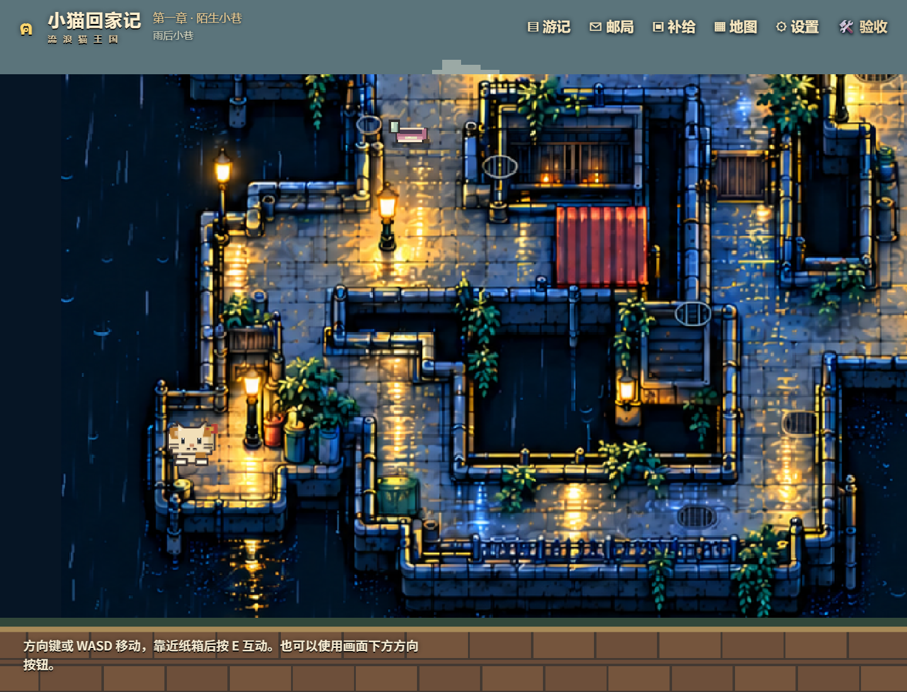
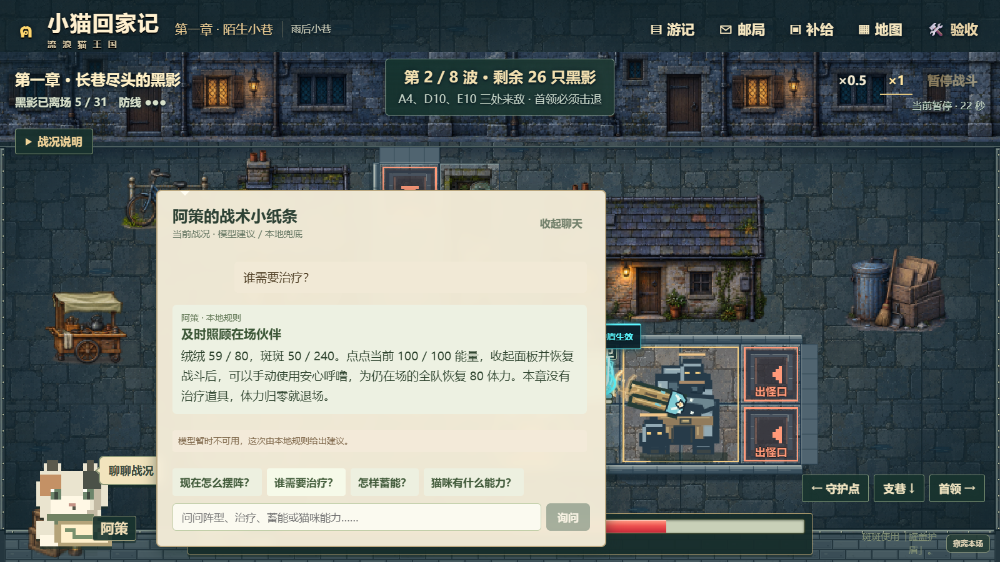
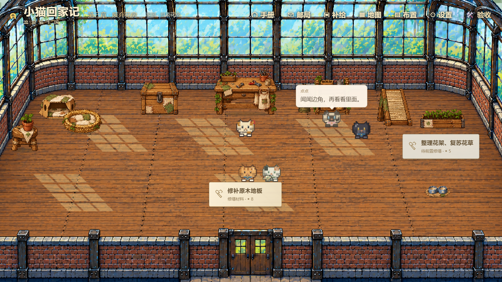
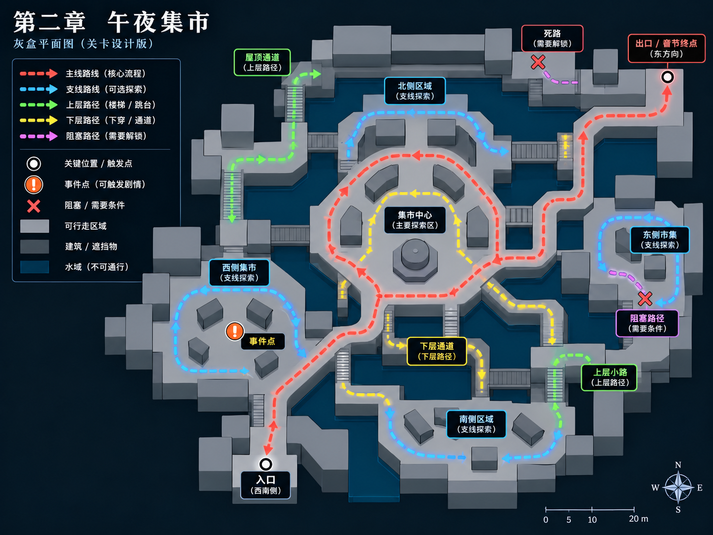
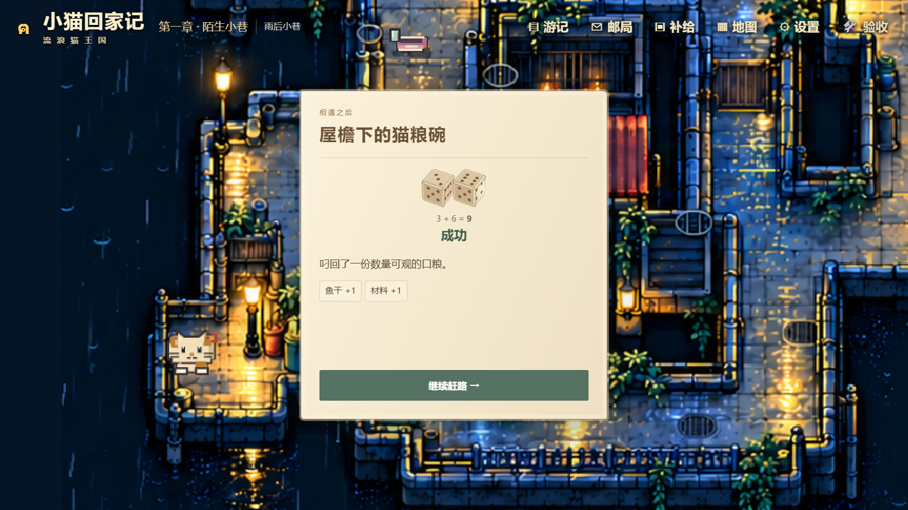

STRAY KITTY / A FIVE-PERSON PROJECT
One lost cat.
One world to build.
An interactive story about the game we built, and the decisions that brought it to life.
SCROLL TO FOLLOW THE CAT →
THE GAME / ELEVATOR PITCH
A cat's adventure.
A home to share.
A pixel-art browser adventure combining exploration, narrative choices, tactical defense and home building.



What begins as a search for home
becomes a home built together.
LEVEL DESIGN / MIDNIGHT MARKET
A two-dimensional view.
Three levels to explore.
Ground streets, rooftops and an underpass share one navigable world.
Playable floors are distinct from decorative artwork layers.


THE HIDDEN VERTICAL STRUCTURE
Schematic floor relationships, not literal 3D geometry.
ENGINEERING / THE SYSTEMS UNDERNEATH
A choice appears.
A consequence persists.
The browser presents the moment. Shared backend rules save what happens next.

A simplified walkthrough—not an observed live request or Datadog trace.
Explore the story
Scroll to build each scene, or use the arrows to play each complete transition at an even pace.
Space / → next cinematic sequence
← previous · Esc finish motion
Home restart
Only the route and the original game cat remain behind the presentation content.